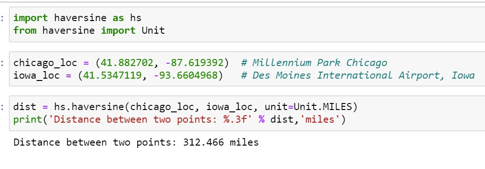
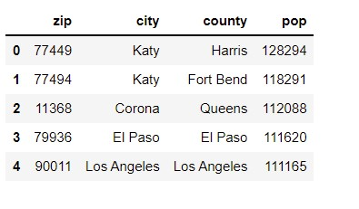
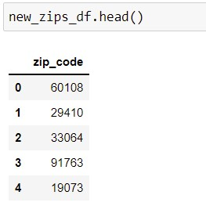

The importance of location information is not limited to real estate dataset only; it could add value to the various domains in Machine Learning such as transportation, e-commerce, geology, agriculture and many more. To get the information of a location such as how far from the city center is straightforward if information is required for a single city. We simply could calculate the distance using latitude and longitude of two data points. For example, we have location information of two points, Millennium Park Chicago (Latitude: 41.882702, Longitude: -87.619392) and Des Moines International Airport, Iowa (Latitude: 41.5347119, Longitude: -93.6604968). The correct calculation of distance between two points in earth surface is using Haversine formula which calculates the distance between two points on a sphere (ref: Wikipedia/Haversine_formula).
This technique could be implemented to calculate distance from any reference location. However, to calculate location information of larger area for example whole state or country is little tricky because there could be multiple big cities as reference points. In this article, I am presenting one technique of getting location information for a large region using zip code. It is certain that latitude and longitude coordinates of two points of interest could be more precise to get the accurate distance however it is not convenient to get location information for a large region. For example, we have location information of two points, Empire State Building, New York city (Zip code: 10001) and Willis Tower Chicago (Zip code: 60606). The distance between these two zip codes can be calculated using pgeocode library as shown in the following example:

Following zip codes from list of top 500 big cities in the US was implemented to calculate the distance of a given zip code from any of these cities.
There should be zip code in the dataset then the distance for a data point to the nearest big city in the above list is calculated in miles. We are going to calculate the distance from nearest city among 500 big cities in US for the following zip codes in the dataframe:
Finally, this distance of the location of interest from the big city could be an important feature and adds value to the dataset.